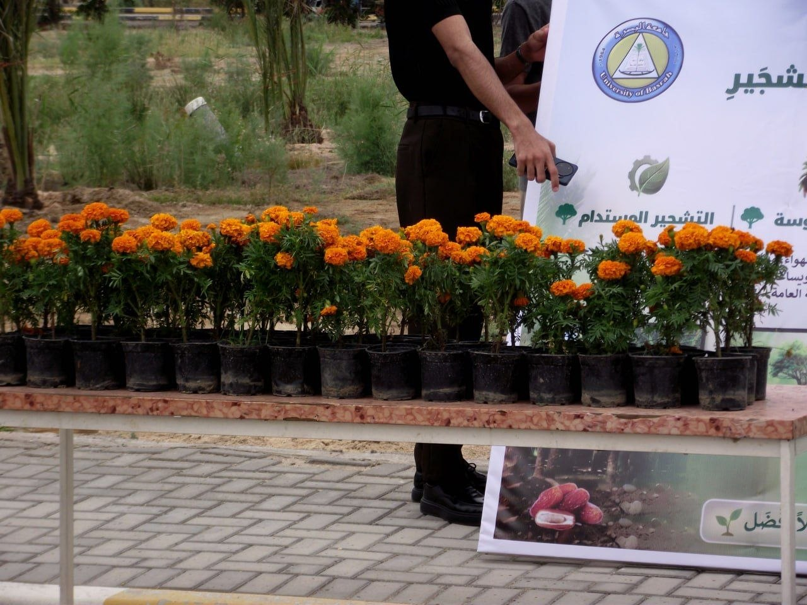

المبادرة الجامعية
بحضور رئيس قسم هندسة النفط والغاز، الدكتور عمار علي وتحت شعار "النخيل شجرة الحياة"، شهد قسم هندسة النفط والغاز صباح يوم الأحد 2026/04/20 مبادرة مميزة لزراعة النخيل.
تفاصيل الفعالية

شارك في المبادرة أكثر من 150 طالب وطالبة، بالإضافة إلى أعضاء هيئة التدريس. تم زراعة 100 شتلة نخيل في محيط الحرم الجامعي، مع التركيز على أهمية الحفاظ على التراث الزراعي العراقي.
أهمية المبادرة
"النخيل ليس مجرد شجرة، بل هو رمز لحياتنا وثقافتنا العراقية العريقة" — الدكتور عمار علي
تهدف المبادرة إلى تعزيز الوعي البيئي بين الطلاب وتشجيعهم على المساهمة في مشاريع مجتمعية ذات أثر إيجابي على البيئة والمجتمع.